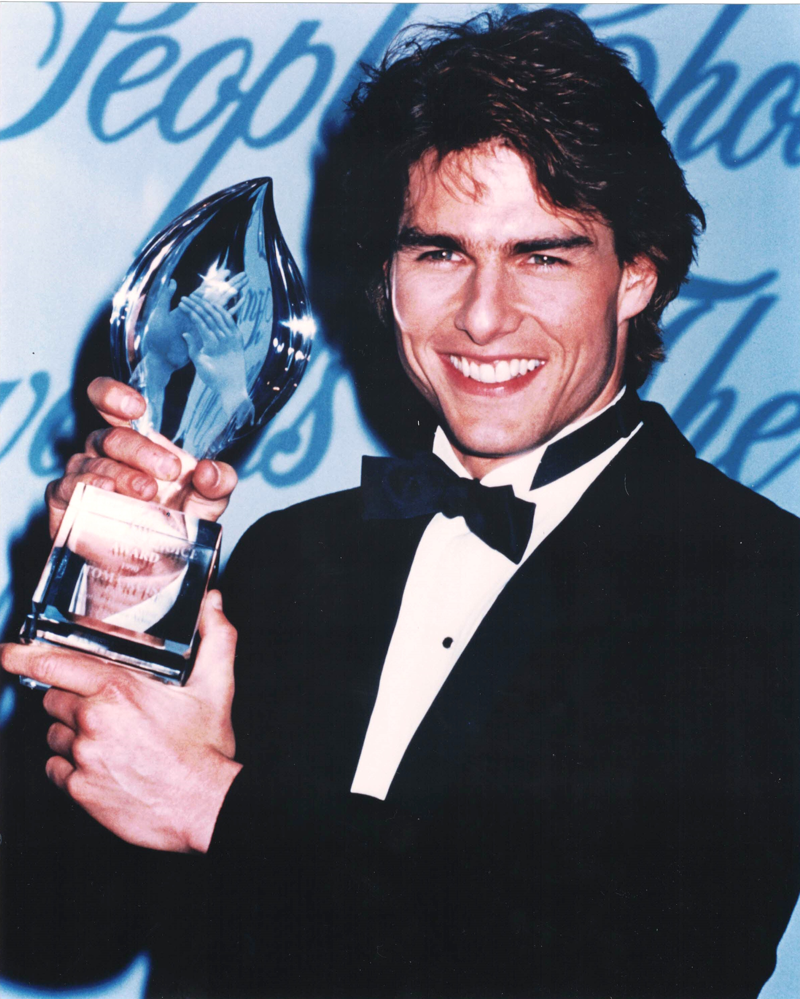

Product No. HEC-0063
$14.99
Shipping: $8.95
Description
8x10 color photograph
Full Description
Tom Cruise is an American actor and producer who became one of the most successful and recognizable movie stars of his generation. Born Thomas Cruise Mapother IV on July 3, 1962, in Syracuse, New York, he began acting professionally in the early 1980s and quickly emerged as a leading man. Cruise gained widespread attention with films including "Risky Business" and "Top Gun," the latter establishing him as a major international star. He went on to appear in a long series of successful movies such as "Rain Man," "Born on the Fourth of July," "A Few Good Men," "The Firm," "Jerry Maguire," "Eyes Wide Shut," "Minority Report," "Collateral," and "The Last Samurai." He is especially associated with the "Mission: Impossible" film series, in which he stars as IMF agent Ethan Hunt. Cruise has also served as a producer on the franchise and became known for performing many of his own elaborate action stunts. His performance in "Born on the Fourth of July" earned him a Golden Globe Award and an Academy Award nomination. He received additional Oscar nominations for "Jerry Maguire" and "Magnolia." Cruise returned to one of his most famous roles as Pete "Maverick" Mitchell in "Top Gun: Maverick" (2022), which became a major worldwide box-office success. With a film career spanning more than four decades, Tom Cruise remains one of Hollywood's most prominent action and dramatic stars, making his autographs, photographs, and movie memorabilia popular with collectors.
Condition
Excellent condition